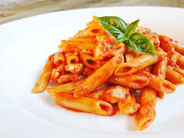

Penne al pomodoro
Ingredienti
- 500g di penne
- Olio, sale e pepe q.b.
- 800g di pomodoro
- Aglio a spicchi
- Erbe aromatiche
Preparazione
- Mettere sul fuoco una pentola contenente acqua
- Soffriggere aglio ed erbe aromatiche
- Versare i pomodori nel soffritto
- Scolare al pasta e saltarla sulla padella
- Servire il piatto